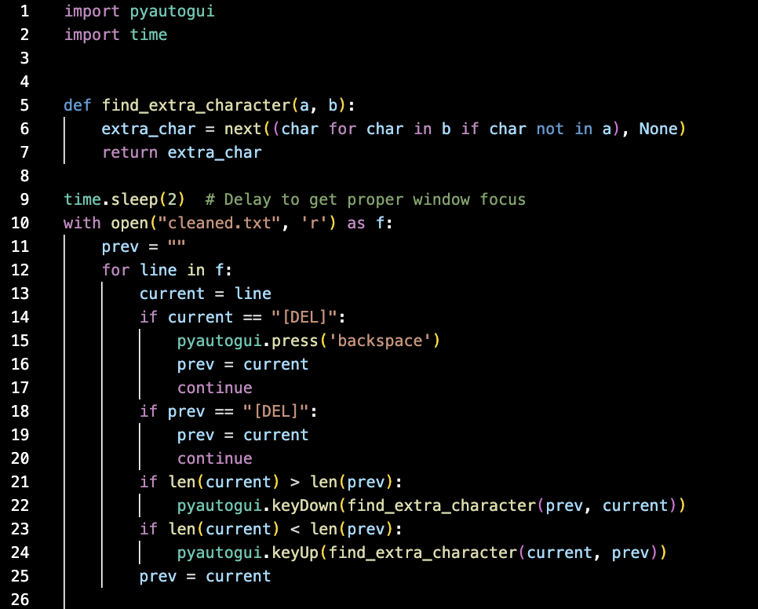

After poking around in Wireshark for a bit, I saw that many of the packets in the provided pcap file contained information about keys being pressed.

These key presses don't follow the typical typing pattern where one key is pressed and released, then another is pressed and released, etc.
Instead, one chord of keys is being pressed and released before moving on to the next.
I've thought a lot about alternative typing methods and have even abandoned qwerty myself, so with the help of the first hint, I recognized this input to be that of a stenotype.
Well, not exactly. Stenotypes don't have keys like 'C' and 'V', as the above input shows. This input was instead created on a qwerty keyboard with something like Plover.
Before we can do any kind of processing on this data, we need to download it and clean it up a bit.
tshark -r keyboard.pcapng -Y 'usbhid.data' -Y "usb.dst == host" -T fields -e usbhid.data > raw.txt
Here is a snippet of the data.
It doesn't look like much at first, but we can already see the formation of chords indicative of stenography, so we know we're on the right track.
This seems to be the mapping used to encode the key presses.
I wrote this script using the above mapping to try and create a nicer text file to work with.
And here is the result. Now we can clearly see exactly what this person was inputting into their keyboard.
The only thing left to do is turn these inputs into readable text.
The simplest way I could think to do this was to find some qwerty-stenography software and write a script that performs these inputs locally.
I found this web demo that seems to work. I noticed it doesn't handle backspaces the way I'd expect.
Any important data parts of the file that contain backspaces can be manually adjusted so it's as if the writer never made their error in the first place.
Here's my script to press all the keys. I just ran this, opened the steno demo, and waited for something that looked like a flag.
And we have our flag, utflag{learning_stenography_on_a_qwerty_keyboard_is_quite_difficult}